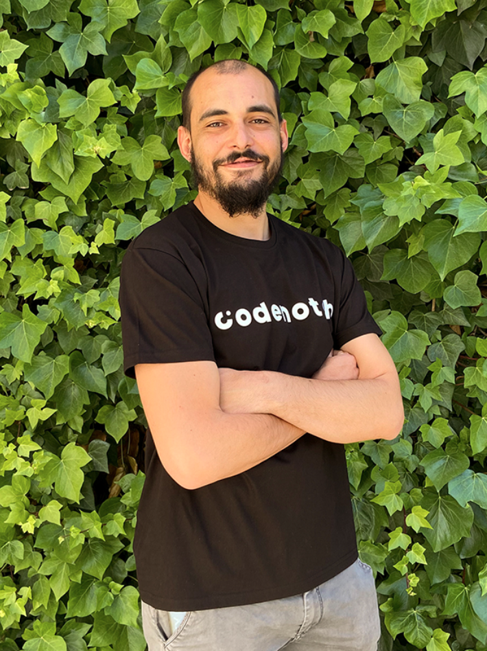

José Herrera. Head of teachers.
José es Ingeniero Superior en Informática por la Universidad Politécnica de Madrid y Doctor por la Universidad Complutense de Madrid.
Su pasión por la programación empezó cuando era pequeño, dando sus primeros pasos con tan solo 8 años.
Ha trabajado como desarrollador en Banco Santander, como jefe de proyecto durante 4 años
en el Banco ING y como ingeniero de investigación en el IMDEA Networks, siendo responsable de varios proyectos europeos y desempeñando tareas de analista y programador.
Actualmente es el director del equipo docente de Codenotch."
Carmen Martín, Profesora.
Menchu se graduó en bellas artes, pero decidió redirigir su carrera profesional hacia el mundo del diseño web, combinando sus dos pasiones:
el arte y la tecnología.
Dio sus primeros pasos en el diseño web de forma autodidacta, consiguiendo sus primeros empleos como diseñadora freelance.
Tiene conocimientos en UX/UI y maneja herramientas como HTML, CSS, Angular, Figma y Wordpress. El trabajo en equipo, la gestión y el liderazgo la definen
como profesional y como persona.

Daniel Vera. Profesor.
Daniel decidió dar un cambio radical a su vida profesional. Dejó su trabajo en el mundo de la hostelería y apostó por formarse como desarrollador Full Stack, cambiando así su vida por completo.
Aún siendo un perfil completo, sigue formándose día a día con nuevas metodologías y herramientas. Algunas de las tecnologías que domina son, JavaScript, TypScript, Java, HTML5, CSS, Node.js, GIT, Angular, SQL, entre otras.
Es un apasionado de la tecnología disfruta de ayudar a otros a aprender.
 Codenotch
Profesionales
Contacto
Cursos
Codenotch
Profesionales
Contacto
Cursos